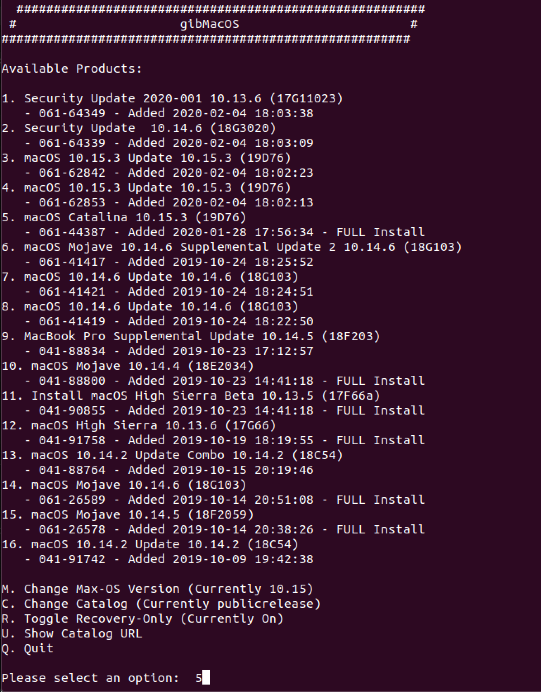
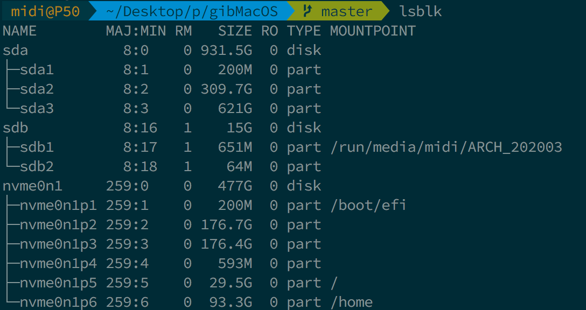
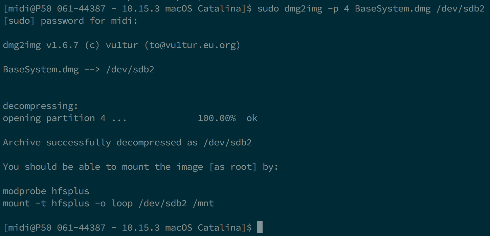

Last modified: Wed Apr 08 2020 05:37:46 GMT+0000 (Coordinated Universal Time)
Making the installer in Linux
- Supported version: 0.5.7
While you don't need a fresh install of macOS to use OpenCore, some users prefer having a fresh slate with their boot manager upgrades.
To start you'll need the following:
- 4GB USB Stick
- GibMacOS
Downloading macOS
Now to start, run gibmacOS.py in terminal with Toggle Recovery-Only:
python gibMacOS.command -r
Now search through for your desired version of macOS, for this example we'll choose option 5 for macOS Catalina:

This will download the RecoveryHDMetaDmg.pkg to \gibmacos-master\macOS Downloads\publicrelease\xxx-xxxxx - 10.x.x macOS xxx

Making the installer
This section will target making the necessary partitions in the USB device. You can use your favorite program be it gdisk fdisk parted gparted or gnome-disks. This guide will focus on gdisk as it's nice and can change the partition type later on, as we need it so that macOS Recovery HD can boot. (the distro used here is Ubuntu 18.04, other versions or distros may work)
Credit to midi1996 for his work on the hackintosh-internet-install-gitbook guide which this is based off of.
Method 1
In terminal:
- run
lsblkand determine your USB device block
- run
sudo gdisk /dev/<your USB block>- if you're asked what partition table to use, select GPT. 
- send
pto print your block's partitions (and verify it's the one needed)
- send
oto clear the partition table and make a new GPT one (if not empty)- confirm with
y
- confirm with
- send
npartition number: keep blank for defaultfirst sector: keep blank for defaultlast sector: keep blank for whole diskHex code or GUID:0700for Microsoft basic data partition type
- send
w- Confirm with
y
- In some cases a reboot is needed, but rarely, if you want to be sure, reboot your computer. You can also try re-plugging your USB key.
- Confirm with
- Close
gdiskby sendingq(normally it should quit on its own)
- Use
lsblkto determin your partition's identifiers - run
sudo mkfs.vfat -F 32 -n "OPENCORE" /dev/<your USB partition block>to format your USB to FAT32 and named OPENCORE - then
cdtogibmacos-master/macOS\ Downloads/publicrelease/xxx-xxxxx - 10.x.x macOS xxxand you should get to apkgfile
- download
p7zip-full(depending on your distro tools)- for ubuntu/ubuntu-based run
sudo apt install p7zip-full - for arch/arch-based run
sudo pacman -S p7zip - for the rest of you, you should know
- for all distros: make sure you're using bash for 7zip to work.
- for ubuntu/ubuntu-based run
- run this
7z e -txar *.pkg *.dmg; 7z e *.dmg */Base*to extractBaseSystem.dmgandBaseSystem.chunklist - mount your USB partition with
udisksctl(udisksctl mount -b /dev/<your USB partition block>, no sudo required in most cases) or withmount(sudo mount /dev/<your USB partition block> /where/your/mount/stuff, sudo is required) cdto your usb driver andmkdir com.apple.recovery.bootin the root of your FAT32 USB partition- now
cporrsyncbothBaseSystem.dmgandBaseSystem.chunklistintocom.apple.recovery.bootfolder.
- download
Method 2 (in case 1 didn't work)
In terminal:
- run
lsblkand determine your USB device block
- run
sudo gdisk /dev/<your USB block>- if you're asked what partition table to use, select GPT.

- send
pto print your block's partitions (and verify it's the one needed)
- send
oto clear the partition table and make a new GPT one (if not empty)- confirm with
y
- confirm with
- send
n- partition number: keep blank for default
- first sector: keep blank for default
- last sector:
+200Mto create a 200MB partition that will be named later on OPENCORE - Hex code or GUID:
0700for Microsoft basic data partition type
- send
n- partition number: keep blank for default
- first sector: keep blank for default
- last sector: keep black for default (or you can make it
+3Gif you want to partition further the rest of the USB) - Hex code or GUID:
af00for Apple HFS/HFS+ partition type
- send
w- Confirm with
y
- In some cases a reboot is needed, but rarely, if you want to be sure, reboot your computer. You can also try re-plugging your USB key.
- Confirm with
- Close
gdiskby sendingq(normally it should quit on its own)
- if you're asked what partition table to use, select GPT.
- Use
lsblkagain to determine the 200MB drive and the other partition
- run
sudo mkfs.vfat -F 32 -n "OPENCORE" /dev/<your 200MB partition block>to format the 200MB partition to FAT32, named OPENCORE - then
cdtogibmacos-master/macOS\ Downloads/publicrelease/xxx-xxxxx - 10.x.x macOS xxxand you should get to apkgfile
- download
p7zip-full(depending on your distro tools)- for ubuntu/ubuntu-based run
sudo apt install p7zip-full - for arch/arch-based run
sudo pacman -S p7zip - for the rest of you, you should know
- for all distros: make sure you're using bash for 7zip to work.
- for ubuntu/ubuntu-based run
- run this
7z e -txar *.pkg *.dmg; 7z e *.dmg */Base*this will extract the recovery from the pkg through extracting the recovery update package then extracting the recovery dmg then the hfs image from it (BaseSystem.dmg). - download
dmg2img(available on most distros) - run
dmg2img -l BaseSystem.dmgand determin which partition hasdisk imageproperty
- run
dmg2img -p <the partition number> -i BaseSystem -o <your 3GB+ partition block>to extract and write the recovery image to the partition disk- It will take some time. A LOT if you're using a slow USB (took me about less than 5 minutes with a fast USB2.0 drive). 
- download